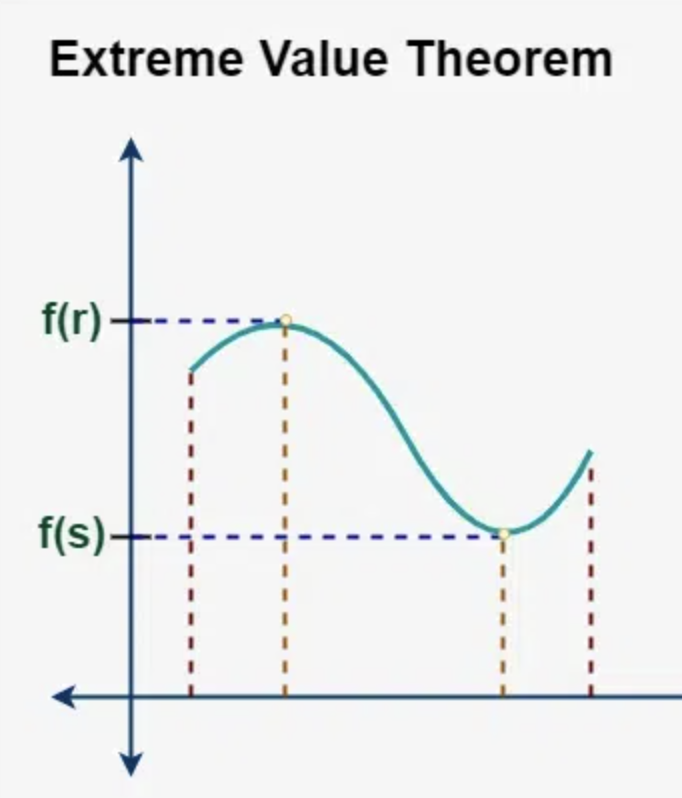

Theorem
If f is continuous on [a,b], then f has a maximum and a minimum on [a,b].

Proof
Suppose f is continuous on [a,b] and f(a) < 0 < f(b)
Let S = {f(x) | x in [a,b]}. Since S is bounded, it has a supremum, call it M
If M is in S, M is the max, so assume otherwise
Consider g(x) = 1/(M-f(x)), g(x) is continuous on [a,b]. However, for all n in N (capital N denoting natural numbers) there exists x such that M-f(x) < 1/n
This means 1/(M-f(x)) > n. As N is unbounded, so is g(x) on [a,b], contradiction.
Proof is similar for minimum